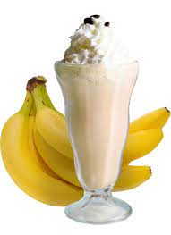

Banana Shake

Description
Traditional Indian milkshakes are cold and creamy drinks that are made in a variety of tasty flavors.
I love all sorts of milkshakes, from decadent Chocolate Shake to fresh and fruity Strawberry Milkshake
por Mango Milkshake just about any favorite ingredient can be turned into a shake!
Ingredients
- 4 Banana
- 250ml Coconut Milk
- 2 drops Vanilla Extract
- Raw sugar(acc. to taste)
Steps
- First peel and chop 3 medium sized bananas, roughly 2 cups. Add the chopped bananas in a mixer or blender jar.
- Then add 2 cups of lite coconut milk or thin coconut milk, preferably cold or chilled. I have used Homemade
Coconut Milk with a very thin consistency.
- Add a ½ teaspoon of vanilla extract, or 1 to 2 pinches of vanilla powder is optional, but the vanilla
really does help to balance the sweetness of the banana and adds great flavor.
- Add 2 to 3 tablespoons, or more or less to taste, of raw sugar or jaggery.
- Blend until smooth. If you find the banana shake to be very thick, add a few splashes
of water and blend again until you get the desired consistency.
- Pour into 2 large or 3 small glasses.